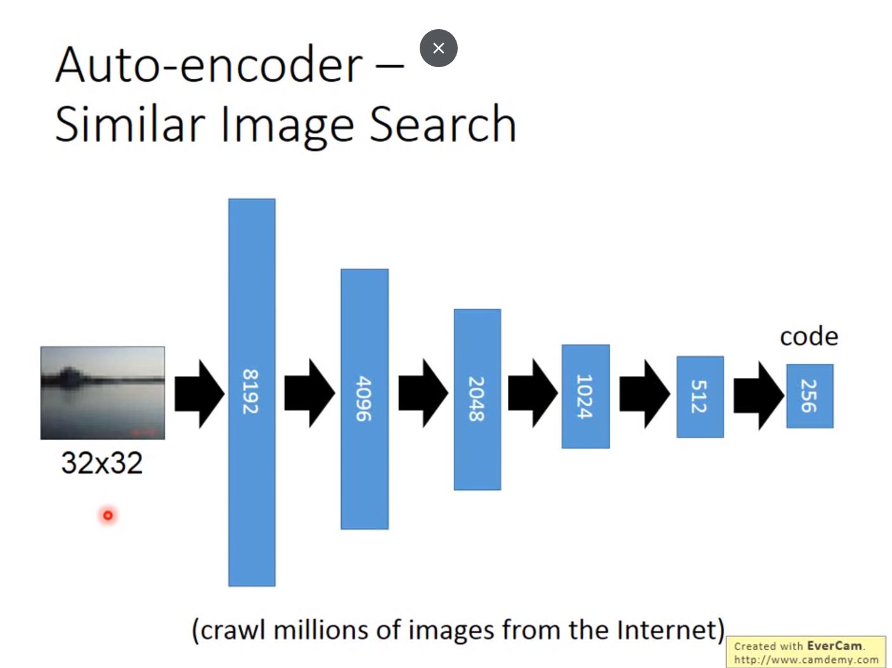
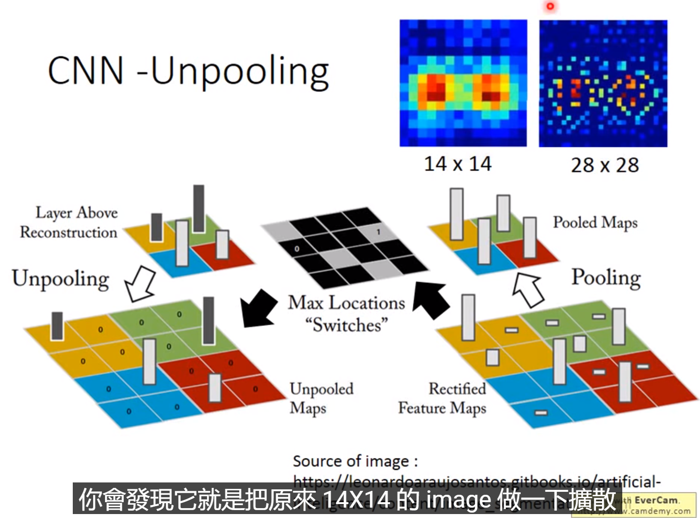

无监督学习 自编码器 自编码网络
Auto-Encoder and More Auto-Encoder
PCA and Deep Auto-Encoder
Auto Encoder是无监督学习的一种，相比监督学习可以利用的data数据更多（不需要标注）
PCA是一种编解码器，编码和解码的权重是转置的关系
Text Retrieval
文本检索，输入query返回最接近的文件
使用auto-encoder将维度降低到2维，可以看到非常满意的分类结果
Similar Imgae Search
相似图像搜寻
如果在像素等级进行距离计算，结果令人很不满意，而使用encoder在编码之后

Pre-Training
如果encoder的hidden layer超过了输入输出，那么需要在隐藏层添加一个很强的regularzation，需要中间很大的维度是一个系数的矩阵，让起到作用的神经元数量比较少，防止网络直接把输入原样输出
逐层的用auto-encoder学习隐藏层，作为预训练的参数
这样类似identity学习的方式可以学到比较好的权重，之后fine-tune会得到比较好的数据
De-Noising auto-encoder
用加噪声后的数据作为输入，以加噪声之前的数据作为要学习的target，可以得到一个去噪的网络
CNN-Unpooling-Deconvolution

反pooling是一种扩充image的方法
反卷积实际上就是卷积，只不过权重的顺序不一样
More About Auto-Encoder
discriminator
把encoder和discriminator一起训练，discriminator是评价encoder的一个指标
这是一种特殊的auto-encoder
sequential data
to be continued
Explainable Encoder
Encoder如何变得可解释
Feature Disentangle
从数据中提取不轻易可以看到的特征信息，比如从一段语音中提取到声音信息
Discrete Representation
Encoder得到vector后，去codebook中寻找最相似的vector，再放入decoder中，最小化reconstruction loss，达到一个分类的效果